Nonnebakken
Ringburg
Nonnebakken - Letztes Update 01.04.2024 (zu den Hortfunden)
Navidaten: 55.39194 10.38916 - Nonnebakken 6, 5000 Odense C
18.09.2023
Im Januar 2021 wurde durch die damalige Kulturministerin Joy Mogensen ein fast 400-seitiger Antrag nach Paris an die UNESCO Welterbe Institution (International Council on Monuments and Sites - ICOMOS) auf den Weg gebracht, der die Aufnahme der fünf dänischen Wikingerburgen in die Welterbeliste zum Ziel hat. Die Entscheidung fällt nun auf der 45. Sitzung des Welterbekomitees vom 10. bis 25 .September 2023 in Riad, Saudi-Arabien. Jeg ønsker ansøgningen held og lykke!
Es hat geklappt - Herzlichen Glückwunsch - Gestern, am 17.09.2023, wurde in Riad in Saudi-Arabien auf der 45. Sitzung des Welterbekomitees der UNESCO beschlossen, die dänischen wikingerzeitlichen Ringburgen - Aggersborg, Fyrkat, Nonnebakken, Borgring und Trelleborg - zum Welterbe zu erklären. Herzlichen Glückwunsch!
"Nonnebakken" war eine ehemals ringförmige Wikingerburg vom Trelleborgtyp. Sie lag im Zentrum der heutigen Stadt Odense auf der Insel Fünen. Genauer gesagt, lag der Wall grob zwischen den heutigen Straßen Nonnebakken, Hunderupvej und Allégade, südlich des Flusses Odense Å. Heutzutage sind keine oberirdischen Spuren erhalten / sichtbar. Ihre Spuren konnten aber über Ausgrabungen, die gerade in den letzten Jahren aufsehenerregende Erkenntnisse und Fundstücke lieferten, eindeutig nachgewiesen werden. Über die Ausgrabung von Architekt C.G. Schultz vom Nationalmuseum Kopenhagen 1953 konnte der eindeutige Beweis für die Existenz einer Ringburg erbracht werden. Dieser hatte auch zw. 1945 und 1948 die Ausgrabungen an der Aggersborg geleitet. In den Ausmaßen gleicht Nonnebakken am ehesten der Burganlage von Fyrkat mit einem inneren Durchmesser von ca. 120 m (Grabungsergebnis 1953). Weitere Ausgrabungen des Dänischen Nationalmuseums im Umfeld fanden zunächst 1968 und 1969 (Olaf Olsen) und im Bereich Møntergårdens 1976 (Jørgen Nielsen) statt. Im Jahr 1988 wurde ein mindestens 4 m breiter und 2 m tiefer Spitzgraben mit einer maximal 10-12 m breiten Berme bei Kabelausschachtungen nachgewiesen. Die Verfüllung ließ sich in die Klosterzeit datieren. Ein 8 m breiter und 4 m tiefer Spitzgraben wurde 1992 im NO und NW im Schnitt ergraben. Bei Notgrabungen im Zuge der Fernwärmeinstallation wurde 1995/97/98 ein mindestens 3 m tiefer und 11 m breiter Graben erforscht. Dabei wurde ein Spaten aus Eichenholz geborgen. Dieser ließ sich dendrochronologisch in die "Funktionszeit" der Anlage datieren. Bei weiteren Untersuchungen im Jahr 2002 wurden Teile der Klosteranlage erfasst. Zuvor gab es aber auch schon 1775 und 1889 vereinzelt Ausgrabungen, um der Burg auf die Spur zu kommen.
Odense selbst wurde erstmals in einem Dokument - im Jahre 988 - des römisch-deutschen Königs Otto III. (ca. *980 - 1002, aus dem Haus der Ottonen, ab 996 römischer Kaiser) erwähnt. Vermutlich leitet sich der Name von einem Verehrungsplatz für Odin, der Göttervater der nordischen Mythologie ab.
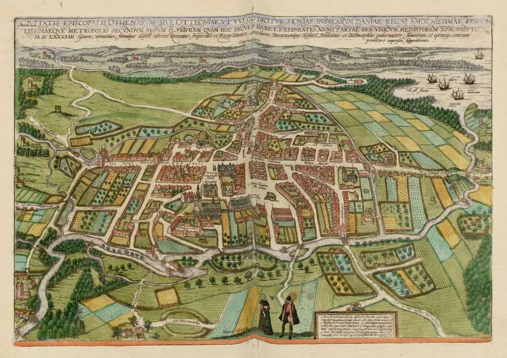
Die Ringburg "Nonnebakken" ist übrigens die erste, von inzwischen fünf entdeckten Ringburgen auf dem Staatsgebiet des heutigen Dänemark, über die sich eine Erwähnung fand. In der Stadtansicht von Odense im Städteatlas "Civitates Orbis Terrarum" (Band 5, Bildtafel 30 - Lizenz: Public Domain) von Georg Braun (*1541 - 1622) und Frans Hogenberg (*1535 - 1590) ist sie nämlich eindeutig - unterer Rand nahezu mittig - zu erkennen (siehe oben). Diese Ansicht von Odense entstand 1593 wohl nach Angaben von Heinrich Rantzau oder nach Skizzen, die er veranlasst hatte. Auf dieser Ansicht ist die Ringburg mit der Bezeichnung "locus Nundeborrig dictus" versehen (Übersetzung: "ein Ort namens Nundeborrig"). Auf einer Karte von 1717 ist dann der Name in "Nonne Bierg" abgeändert worden. Später wechselt die Bezeichnung noch zu "Nonnebjerg", bzw. "Nonnebanke", bevor sich die Bezeichnung "Nonnebakken" etablierte.
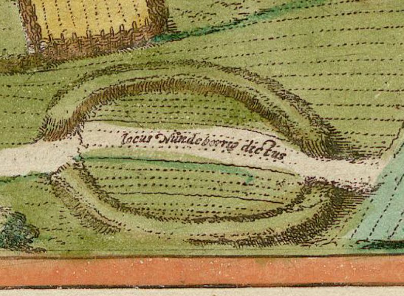
Ausschnitt aus der obigen Städteansicht von 1593 - aus: Civitates Orbis Terrarum - Band 5 - Lizenz: Public Domain
In der digitalen Sammlung der Königlichen Bibliothek in Kopenhagen findet sich diese Karte von 1655 die ursprünglich in dem Buch "Regnorum Daniæ Norwegiæ, ut & Ducatuum Slesvici & Holsatiæ, Regionumque Ad ea spectentium, Descriptio Nova. - Amstelodami: Apud Ægidium Janssonium Valckenier, 1655" zwischen den Seiten 218 und 219 eingebunden ist. Es soll sich um einen Kupferstich von Martin Zeiller (*17.04.1589 - 06.10.1661) handeln. Die Stadt wird hier mit ihrem lateinischen Namen "Ottonium" bezeichnet. Auch hier ist Nonnebakken unten links/mittig deutlich zu erkennen. Es ist natürlich auch klar erkennbar, das sie der obigen Karte von 1593 nachempfunden ist.
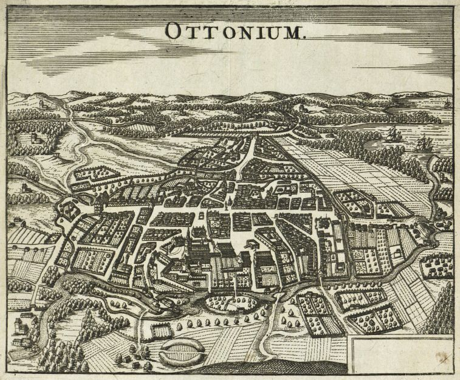
In dieser Ansicht von 1717 ist der Ringwall ebenfalls deutlich zu erkennen, hier allerdings ohne den durchquerenden Weg - Quelle: HistoriskAtlas.dk
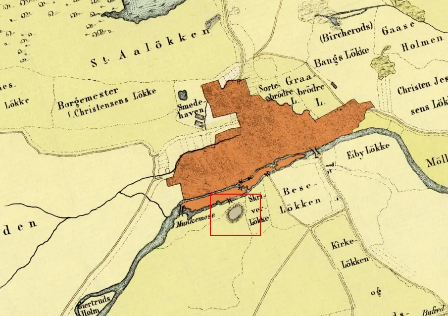
Ebenfalls aus dem Jahr 1717 ist die Übersicht "Grund risning af Odense Stad...", deren Original offenbar im Reichsarchiv in Kopenhagen aufbewahrt wird, von Jürgen Themsen (Näheres unbekannt) stammt und auch die Ringburg als "Nonne Bierg" beschriftet deutlich zeigt.

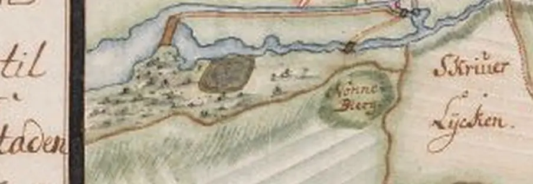
Der Name "Nonnebakken" (Nonnenhügel) leitet sich übrigens von einem ehemaligen Nonnenkloster ab. Die erste Erwähnung dazu findet sich zum 06.02.1180 mit einem Benediktinerkloster, in dem es offenbar auch Nonnen gab. Im Jahre 1186 scheinen die Nonnen eine eigene Einrichtung, auf dem Areal der ehemaligen Wikingerburg, erhalten zu haben. 1249 zogen sie dann weiter in ein Kloster bei Dalum, südlich der Stadt. Über Ausgrabungen 1976 konnten diese historischen Fakten auch bestätigt werden.
Auch in dieser historischen Karte von 1785 im Maßstab 1:4000 mit der Bezeichnung "Hunderup, Odense, Jorder" die über die Webseite "Historiske Kort" abgerufen werden kann ist der Ringwall ebenfalls eingezeichnet.
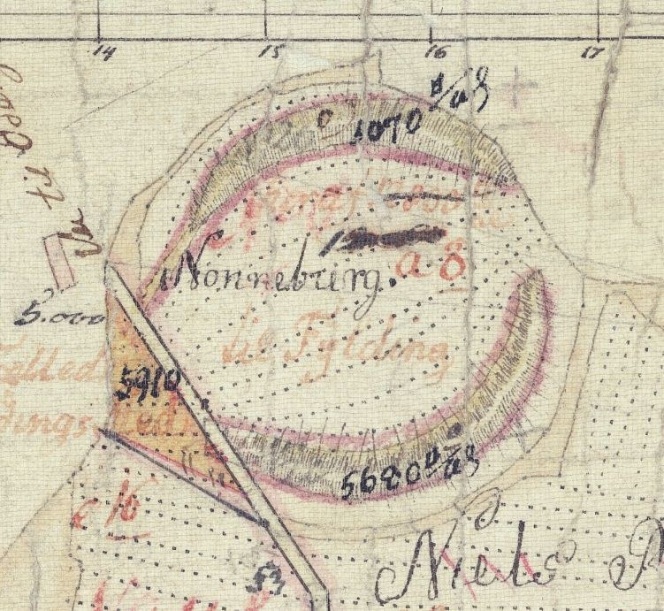
In der Digitale Sammlung des Nationalmuseums in Kopenhagen kann man diese Seiten abrufen, die Niels Ringe (*12.08.1791 - 29.04.1854, Zeichner/Maler) zugeschrieben werden. Es handelt sich um eine mehrseitige Beschreibung (hier nur das erste Blatt) von Nonnebakken mit mehreren Zeichnungen. Leider finden sich keinerlei Datumsangaben auf seinen Aufzeichnungen, was typisch für ihn war.
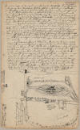 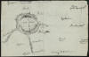 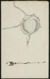 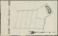 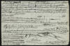


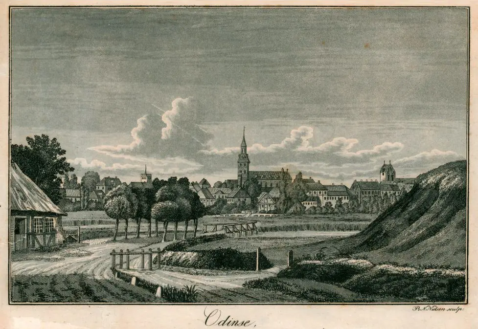
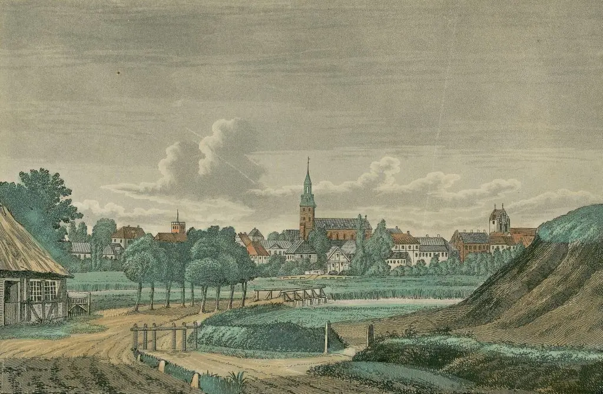
Diese Ansicht von "Odinse" aus dem Jahr 1840 - sw und koloriert - zeigt rechter Hand Reste des Walles von Nonnebakken - Das Urheberrecht liegt bei "Odense Bys Museer"
Im 1908 traf die Stadtverwaltung Odense allerdings die unglückseelige Entscheidung und ließ diesen einebnen. Die Bedeutung der Erderhebung (Wall) war zu der Zeit leider längst in Vergessenheit geraten.

Eine historische Fotografie von 1909 zeigt die Grabungsmannschaft mit ihren Gerätschaften - Das Urheberrecht liegt bei "Odense Bys Museer"
Die nachfolgende Übersicht ist der Zeitschrift "SKALK, 2016, Nr. 6, S. 5" entnommen. Daraus sind die einzelnen Grabungsphasen mit den Jahreszahlen ersichtlich. Die Ringburg Fyrkat wurde hier zu besseren Verdeutlichung in grün unterlegt. Für die Genehmigung zur Verwendung auf meiner Homepage danke ich dem Urheber nochmals recht herzlich (Tak igen til forfatteren for tilladelsen til at bruge det på min hjemmeside).
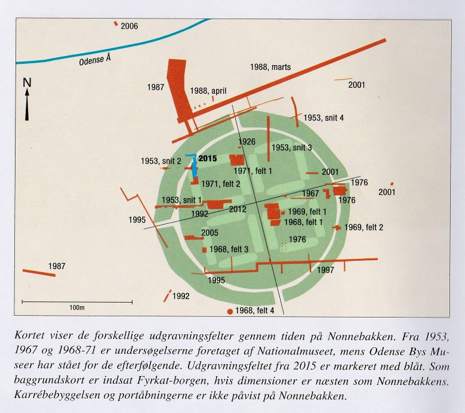
Ergänzend dazu gab es zwischen dem 27. und 30. Oktober 2017 eine weitere Ausgrabung, bei der man gezielt nach dem Nordtor im Ringwall, einem von vier Zugängen zur Ringburg gegraben und dieses glücklicherweise am 26.10.2017 auch tatsächlich gefunden hat. Damit ist der letzte Zweifel aus dem Weg geräumt - es ist eine wikingerzeitliche Ringburg vom Typ "Trelleborg". Reste von den Häusern im Wallinneren hatte da aber immer noch nicht entdeckt, so dass auch schon die Vermutung aufkam, dass diese Burg vielleicht nie fertiggebaut wurde.
Diese alte Postkarte, das Urheberrecht liegt bei "Odense Byer Museer" zeigt die neuzeitliche Ansicht, ähnlich der heutigen.
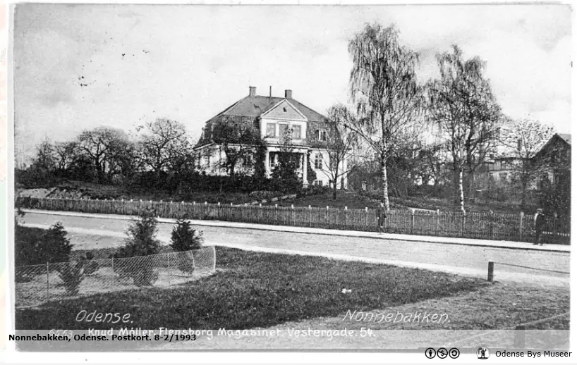
Die Lage der Ringburg innerhalb der modernen Bebauung zeigt dieses Luftbild (Das Urheberrecht liegt bei "Odense Bys Museer"
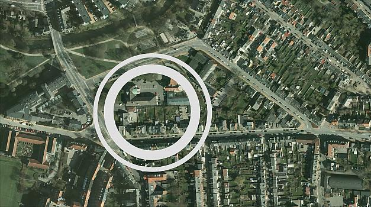
Weiterreichende Informationen zu den Grabungskampagnen - in dänischer Sprache - finden sich über "http://www.historiskatlas.dk" hier: Fotos / Grabung 2005 / Grabung 2015 / 2017 (Fund des Nordtores). Die Abhandlungen sind bebildert, so dass man sich auch ohne dänische Sprachkenntnisse zumindest mal ein Bild machen kann.
In Zusammenarbeit mit dem in Wien ansässigen
Institut LBI
ArchPro (Ludwig Boltzmann Institut für Archäologische Prospektion
und Virtuelle Archäologie) wurden 2019 mehrere hochtechnische
Untersuchungen im Bereich Nonnebakken vorgenommen.Im
März wurden nämlich Bodenradaruntersuchungen bei den größeren Grundstücke im
nördlichen Teil und im September die privaten Gärten entlang der Allégade im
südlichen Teil der Ringburg gescannt. Einige Monate nach den Scans traf man sich
in Wien, um die Ergebnisse zu interpretieren. Die Verbindung zwischen dem Wissen
des Museums über die lokalen archäologischen und zeitgenössischen Bedingungen
und dem Fachwissen von LBI ArchPro erwies sich als äußerst
wertvoll, und nach einigen Tagen intensiver Arbeit konnten einige Elemente mit
der Ringburg in Zusammenhang gebracht werden. Es war unter anderem möglich, die
Wikingerfestung Fyrkat als Schablone über Nonnebakken zu legen und so konnte man
leichter verstehen, welche der vielen schwarzen, weißen und grauen Flecken
relevant waren.
Der Wall und seine Holzfassaden waren zu
sehen, ebenso der Graben, und die Lage des Nordtors konnte aus
einer größeren Fläche belegt werden, als die Ausgrabung 2017
zeigen konnte. Aber das Interessanteste war, dass man auf der Burgoberfläche
Spuren von länglichen Häusern sehen konnte, die quadratisch angeordnet waren, wie
bei den anderen Ringburgen von
Harald
Blauzahn. Das war eine echte Sensation, denn seit ca. 70 Jahren
wurde vermutet, dass Nonnebakken eine von Haralds Ringburgen
war, das markante rechteckige Gebäude auf der Burgfläche wurde erfolglos
gejagt. Jetzt hatte man plötzlich gute Anzeichen dafür, dass die Langhäuser
dort gewesen waren. Vor diesem Hintergrund beantragte das Museum die Genehmigung
zur Anlage zweier kleinerer Grabungsfelder im nordwestlichen Teil der Ringburg.
Sowohl der Landbesitzer, die
Odd Fellow Lodge,
als auch Slots- og
Kulturstyrelsen (Staatliche Schlösser- und Kulturbehörde)
begrüßten den Antrag. Die Ausgrabung wurde im
August 2019 durchgeführt und brachte mehrere bedeutende Ergebnisse
hervor. Erstens wurden die guten Konservierungsbedingungen in
Nonnebakken erneut bestätigt. Die Burgoberfläche lag an dieser Stelle
somit fast 2 Meter unter dem heutigen Gelände und auch hier kam es nach der
Betriebszeit der Burg zu einer starken Erdaufschüttung. Eine weitere wichtige
Erkenntnis war, dass das natürliche Gelände vor dem Bau der Burg eingeebnet
wurde. Das ursprünglich recht stark von Ost nach West abfallende Gelände wurde
vor dem Bau der Burg dadurch ausgeglichen, dass nach Westen hin eine immer
dickere Erdschicht angelegt wurde. Ein drittes signifikantes Ergebnis war das
Erscheinen einzelner Pfostenlöcher im Nordfeld, die denen entsprachen, die auf
den Scans als Teile des Westgiebels eines ost-westlich ausgerichteten Hauses in
dem erwähnten Vierkantbau interpretiert wurden. Mit den neuen Erkenntnissen aus
den Scans konnten nun auch einige bedeutende Pfostenlöcher aus der
Ausgrabung 2015 unmittelbar östlich des Feldes 2019
für den Hausbau angesetzt werden. Zwei dieser Pfostenlöcher sind C14
aus der Zeit um 980 n. Chr.; also die vermutete Bauzeit der
Ringburg. Ebenso konnte mit den neuen Erkenntnissen ein kleiner
Silberschatz aus dem Jahr 2015, datiert
auf die zweite Hälfte des 9. Jahrhunderts, an der Nordseite des
Hauses platziert werden; eine typische Platzierung eines Schatzfundes im
Siedlungskontext. Einige Pfostenlöcher im Südfeld könnten möglicherweise Teile
der Ostseite eines anderen Hauses in der Quadratsiedlung sein, aber hier sind
die Spuren so gering, dass eine eindeutige Interpretation nicht möglich ist. Die
Übereinstimmung zwischen den Ergebnissen des Bodenradars und der Ausgrabung
bedeutet, dass auch die anderen Spuren, die die Scans zeigten, mit großer
Wahrscheinlichkeit als richtig angenommen werden müssen. Mit den Scans und den
kleinen Nachgrabungen ist es jetzt trotz der Unsicherheiten bei den
Interpretationen, die solche kleinen Felder immer geben werden, sehr
wahrscheinlich, dass es wirklich eine quadratische Siedlung auf Nonnebakken gab.
Damit hat Nonnebakken nun alle Eigenschaften, die die Ringburgen von
Harald
Blåtand auszeichnen.
Die beiden nachfolgenden Grafiken habe ich von dieser Webseite - Vikingeborgen Nonnebakken i Odense. Status og perspektiver - Mads Runge und Wolfgang Neubauer, 2020 - entlehnt. Für die Genehmigung zur Verwendung auf meiner Homepage - 08.02.2023 - danke ich den beiden Herren an dieser Stelle nochmals recht herzlich - Jeg vil gerne benytte lejligheden til at takke begge herrer igen for tilladelsen til at bruge det på min hjemmeside - 02/08/2023.
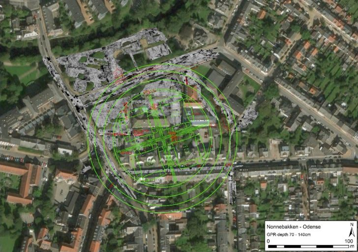
Übersicht der Bodenradardaten der Vermessung im März 2019. In grün der Grundriss von Fyrkat und in rot ehemalige Ausgrabungsfelder. Grafik: Ludwig Boltzmann Institut für Archäologische Prospektion und Virtuelle Archäologie, Wien.
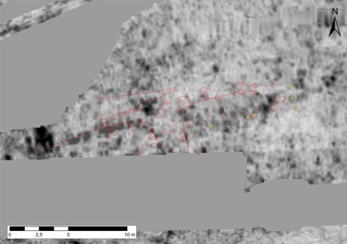
Georadaruntersuchungen am Nordtor von Nonnebakken. In Rot sehen Sie Strukturen, die bei der Ausgrabung im Jahr 2017 registriert wurden. In Dunkelgrau sehen Sie eine Reihe von Pfosten auf der Innenseite des Walls. Die Pfosten schwenken von Westen und Osten zum Burginneren nach Süden. Geringfügige Abweichungen sind als Folge von Verschiebungen des Radarsignals in der Tiefe zu sehen. Einige andere Beiträge sind vorläufig gelb markiert. Grafik: Ludwig Boltzmann Institut für Archäologische Prospektion und Virtuelle Archäologie, Wien, und Mads Runge, Museum Odense
Alle Quellen
zu Nonnebakken sollen in naher Zukunft in einer einzigen
Buchveröffentlichung vereint werden. Im Hinblick auf die Wissensvermittlung wird
an mehreren Fronten gearbeitet. Der Architekt Erik Brandt Dam
hat dafür ein Angebot abgegeben, bei dem es darum geht, den Verlauf des Walles
mit einer 5 Meter breiten Cortenstahlkonstruktion zu markieren,
die auf der Rasenfläche im Nordwesten der Ringburg platziert
werden soll. An anderer Stelle wird vorgeschlagen,den Wall als Variation in den
Bürgersteigen zu markieren. Nördlich der Burg soll eine Kommunikationsstation in
Form einer Ringburg mit einem Durchmesser von 9 Metern errichtet werden.
Hier würde dann die Geschichte der Ringburg erzählt und mit Hilfe modernster
Computertechnik das tatsächliche Aussehen der Ringburg visualisiert. Der
Vorschlag ist noch nicht endgültig angenommen und finanziert, aber er gibt einen
Eindruck von den Möglichkeiten, den Ort bedeutsamer zu kommunizieren, als dies
heute der Fall ist.
Das Ergenbis der
Bodenradaruntersuchungen und der sich anschließenden Auswertung wurde
2020 im "Museum Odenses årbog - Odense Bys Museer 2020" unter dem Titel
"Vikingeborgen Nonnebakken i Odense. Status og perspektiver"
veröffentlicht. Über
diesen Link kann der Artikel als Webseite abgerufen werden, dem
auch die o.a. Informationen von mir entnommen sind - eingearbeitet am
05.02.2023.
Hier noch einige Ausgrabungsfunde - Das Urheberrecht liegt bei "Odense Bys Museer"
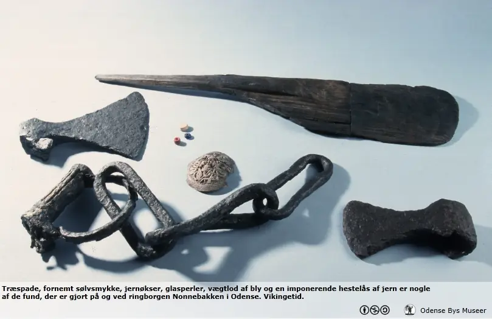
Über die Jahre gab es nun schon 5 sogenannte Hortfunde im Umfeld von Nonnebakken. Der erste wurde schon 1775 gemacht und bestand aus einer beschädigten runden filigranen silbernen Scheibenfibel und einem silbernen Armreif (Durchmesser 7,3 cm) , genannt "Odins Ring".

Quelle: New archaeological investigations at Nonnebakken, a Viking Age fortress in Odense - Mads Runge - in: The fortified viking age, Odense 2017 - S. 51 - abgerufen 16.10.2023.
Der zweite Hortfund wurde im Jahr 1889 entdeckt und bestand aus einer silbernen Scheibenfibel von 6,2 cm Durchmesser (a), ferner 9 Münzen (b) und drei Stück Hacksilber (c).

Quelle: Mads Runge & Henriksen, M. B. (2018). The origins of Odense: new aspects of early urbanisation in southern Scandinavia. Danish Journal of Archaeology, Vol. 7, S. 268. https://doi.org/10.1080/21662282.2018.1475891 - S. 37
Die tolle Scheibenfibel hat noch ihren Ring aus silbernem Perldraht, an dem ein Ziergehänge angebracht werden konnte. Hier ein besseres Foto (Nationalmuseum Kopenhagen, am 16.10.2023 dem Buch "
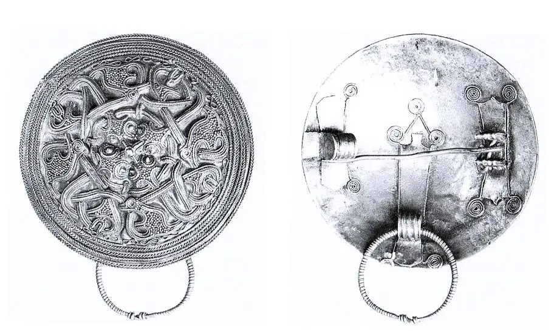
Vor dem Jahr 1901 wurde dann der Hortfund Nummer 3 - vermutlich bei Nonnebakken - gemacht. Es handelt sich um eine filigrane, silberne Scheibenfibel, die allerdings schwer beschädigt ist.
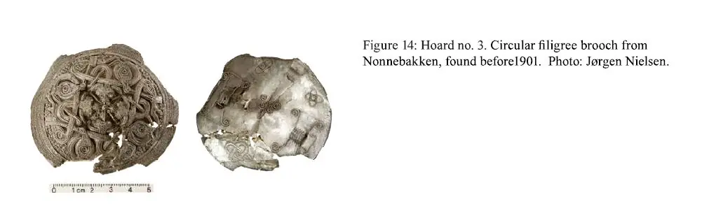
Quelle: New archaeological investigations at Nonnebakken, a Viking Age fortress in Odense - Mads Runge - in: The fortified viking age, Odense 2017 - S. 52 - abgerufen 16.10.2023.
Dazu kann ich noch diese beiden besseren Fotos der Vorder- und der Rückseite dieser silbernen Scheibenfibel, die 1901 in das Odense Museum kam, anbieten - Lizenz: von "Odense Bys Museer" auf Flickr verfügbar - von mir hier am 16.10.2023 eingestellt.
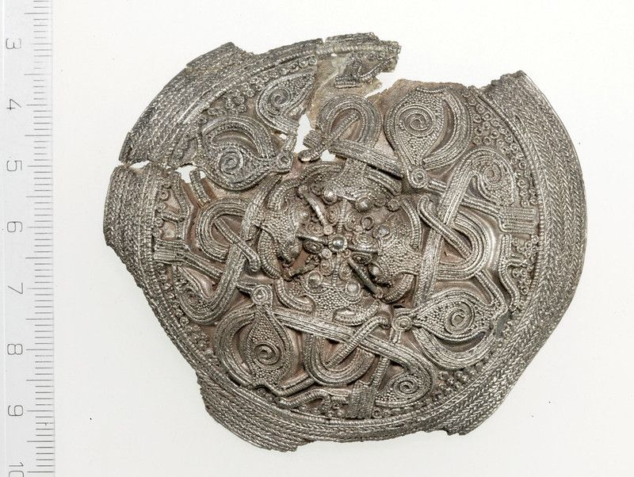
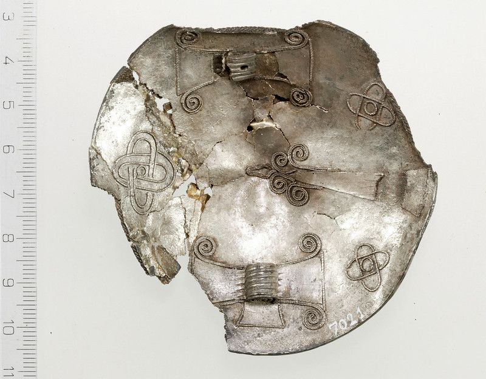
Nur wenige Jahre später, im Jahr 1909, wurde der nächste Depotfund gemacht. Insgesamt 25 Silbermünzen (vielleicht 26, die älteste von 973) und zwei Stück Hacksilber (links oben).
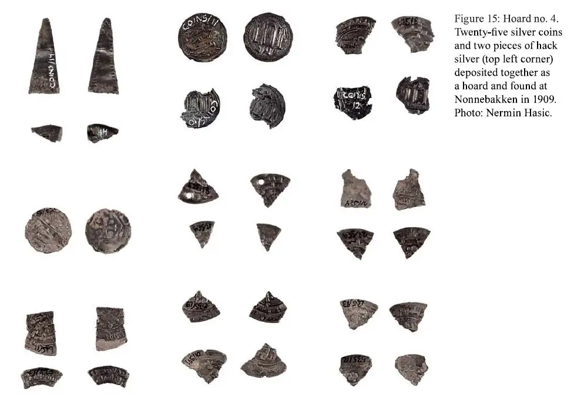
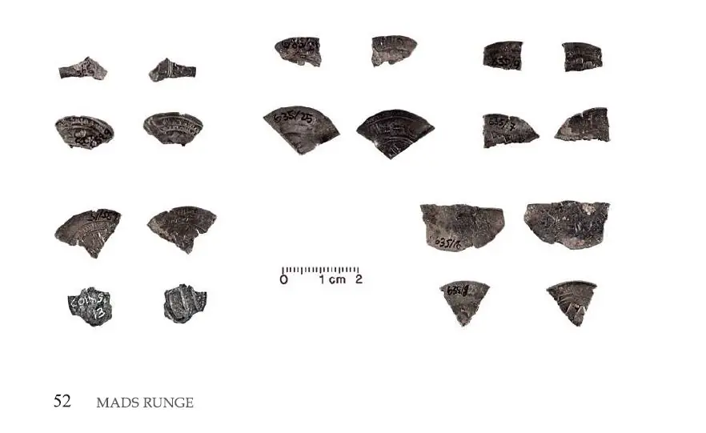
Quelle: New archaeological investigations at Nonnebakken, a Viking Age fortress in Odense - Mads Runge - in: The fortified viking age, Odense 2017 - S. 52 - abgerufen 16.10.2023.
Während den Ausgrabungen von 2015 fand sich der Hortfund Nummer 5, der aus einer silbernen Perle, dem Fragment eines Dirham (Aus der Zeit nach 815) und einem sogenannten Sachsenpfennig (Vermutlich geprägt in Magdeburg zw. 940 und 985) bestand.
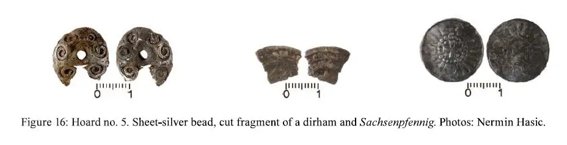
Quelle: New archaeological investigations at Nonnebakken, a Viking Age fortress in Odense - Mads Runge - in: The fortified viking age, Odense 2017 - S. 53 - abgerufen 16.10.2023.
Außerdem wurde 2015 noch ein weiterer toller Fund über eine Begehung mit einem Metalldetektor bei Nonnebakken gemacht. Auf der Vorderseite ist rechts eine stehende Schildmaid und links eine Walküre auf einem Pferd zu sehen. Unterhalb des Pferdes befindet sich ein rechteckiger Wandteppich, der aus den Eingeweiden gefallener Krieger gewebt ist.
Der Fund wurde in dem maschinell ausgehobenem Boden direkt über der Burgoberfläche gefunden. Sie wird auf das 9. Jahrhundert datiert. Aus Fünen sind mindestens zwei weitere Exemplare bekannt: Ein Fragment einer ähnlichen Brosche wurde aus einem metallreichen Fundort bei Engløkken nahe der südöstlichen Küste des Odense-Fjords geborgen, während ein intaktes Exemplar in dem Dorf Rynkeby (der Ortsname bedeutet Kriegerdorf) in Mittelfünen gemacht wurde. Dieser Broschentyp ist in Dänemark relativ selten und wird im Allgemeinen Orten zugeschrieben, von denen angenommen wird, dass sie zu dieser Zeit eine gewisse Bedeutung hatten.
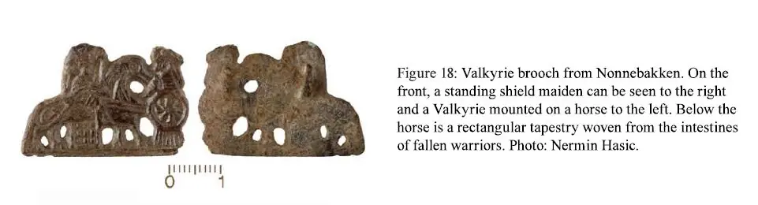
Quelle: New archaeological investigations at Nonnebakken, a Viking Age fortress in Odense - Mads Runge - in: The fortified viking age, Odense 2017 - S. 54 - abgerufen 16.10.2023.
Über die Webseite Fund og Fortidsminder kann man zu Nonnebakken zahlreiche Informationen/Grabungsprotokolle (in dänischer Sprache) abrufen. Leider sind fast alle Dokumente unter dem identischen Titel "OBM9782" abgelegt (OdenseBysMuseer Objekt-Nr. 9782) und dazu ohne jede Ordnung. Deshalb habe ich mir die Mühe gemacht und sie hier nach Datum aufbereitet:
03-02-2012 / 31-08-2012 / 31-08-2012 / 17-09-2012 / 17-09-2012 / 10-08-2015 / 06-09-2016 / 03-04-2017 / 24-10-2017 / 07-02-2018 / 20-06-2018 / 01-03-2019 / 19-08-2019 / 23-03-2020 / 02-06-2020 - die Protokolle mit dem selben Datum sind m.E. identisch und nur in zwei verschiedenen Formaten eingestellt worden. Davor gab es aber zumindest als "Arkæologisk rapport" auch noch die "Kampagne 18. bis 26. Mai 2005 - rapport nr. 84, 2007".
Fredningsprotokoll vom 28.11.1967 und vom 01.03.2019, d.h. quasi Normale Instandsetzung der Anwesen ja, aber ohne eine Ausnahmegenehmigung zum Denkmalschutzrecht dürfen in dem befriedeten Areal - ca. 265 m N-S x 260 m O-W - keine baulichen Erweiterungen, Neubauten oder Innen- und Außenbauarbeiten, die in den Boden gehen, durchgeführt werden.
Über YouTube hat der User "KasperSelvejer" einen Animation zu "Nonnebakken" eingestellt, über die man die digitalisierte, fertig gebaute Ringburg und ihre Langhäuser quasi überfliegt (Von dem User ist eine weitere zum "Hedebyhus" vorhanden).
Auf YouTube finden sich natürlich zum Thema Nonnebakken einige weitere Beiträge, z.B. vom Museum Odense - durch den Projektleiter Ph.D. Mads Runge - Ausgrabungsfunde (3:33 Min) - Vor Ort Erklärungen (3:38 Min) - Ausgrabung 2015 im Zeitraffer (2:17 Min.).
Von ihm ist außerdem eine Art Powerpoint Onlinevortrag (1:03:01 Std) im Hinblick auf die Bewerbung zur Aufnahme in das UNESCO Welterbe. Seit 2009 arbeitet man mit den anderen dänischen Ringburgen an der Bewerbung. Die Entscheidung fällt nun auf der 45. Sitzung des Welterbekomitees vom 10. bis 25.September 2023 in Riad, Saudi-Arabien. Jeg ønsker ansøgningen held og lykke!
Am 17.09.2023 erfolgte die offizielle Aufnahme der dänischen Ringburgen in die Welterbeliste der UNESCO - Herzlichen Glückwunsch!
Literaturhinweise / Webseiten:
Runge, M., & Henriksen, M. B. (2018). The origins of Odense: new aspects of early urbanisation in southern Scandinavia. Danish Journal of Archaeology, Band 7, S. 268. https://doi.org/10.1080/21662282.2018.1475891
Jensen, N. M., Sørensen, J., & Davidson, J. - Nonnebakkeanlæget i Odense. En ny brik til udforskningen. Kuml, Band 36, 1988-89, S. 325334.
Nonnebakken - Odenses vikingeborg - darüber zahlreiche Artikel - in dänischer Sprache - abrufbar. Außerdem mit Fotos wie die Visualisierung der Ringborg / des Wallverlaufs vor Ort angedacht ist (Architekt Erik Brandt Dam und JAC Studios).
Vikingeborgen Nonnebakken i Odense. Status og perspektiver - Mads Rune und Wolfgang Neubauer, 2020
Eskild Arentoft - I vikingernes vold - Museum Odenses årbog Fynske Minder - 1983
Nonnebakken - Odenses forsvundne vikingeborg, 3. reviderede udgave 1985, Henrik Thrane
Knuds Odense - vikingernes by - darüber diverse Artikel abrufbarMøntergården - Museum om Odense og Fyn - Odense Vikingernes by
Nonnebakken Odenses skjulte vikingeborg og dens potentiale som verdensarv. In: M. Runge & J. Hansen (red.) 2017: Knuds Odense vikingernes by, S. 56-63
Metaldetektiverne amatørarkæologer bidrager til forskningsprojekter. In: M. Runge & J. Hansen (red.): Knuds Odense vikingernes by, S. 65-67. Odense.
Christian Thorning Engelstoft (1805-1889, seit 1852 Bischof von Odense) - Samlinger til Fyens Historie og Topographie. 2. bind. Odense 1862 - darin am Ende zahlreiche historische Karte von Odense mit Nonnebakken - von 1593, 1717, 1717, 1760, 1860 og 1877.